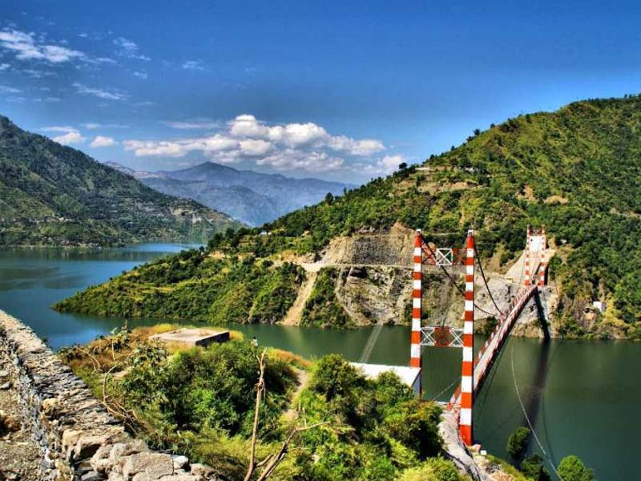
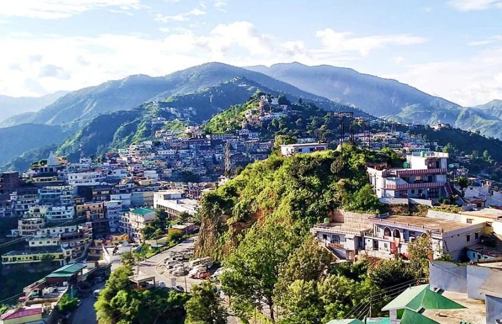
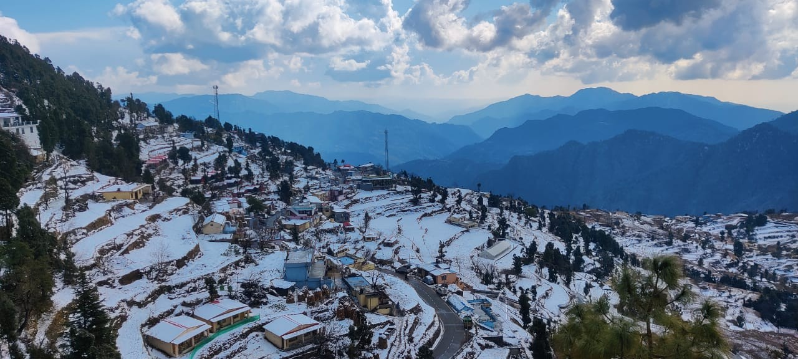
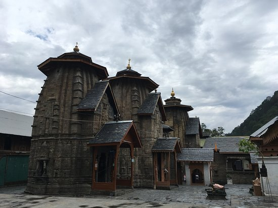
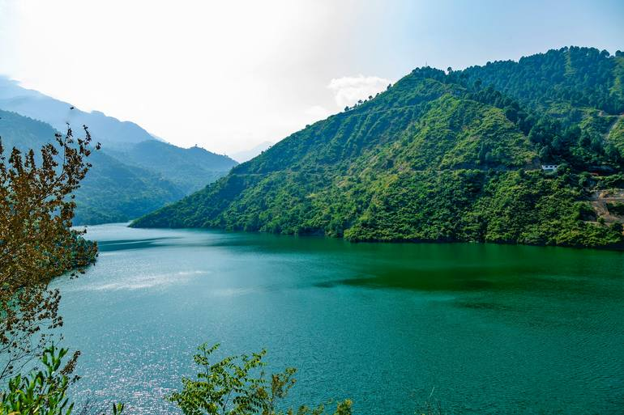

Chamba, a charming hill town in the Tehri Garhwal region of Uttarakhand, is a perfect blend of natural beauty and peaceful vibes. Located at an altitude of around 1,600 meters, this serene destination offers breathtaking views of the snow-clad Himalayas, lush green valleys, and winding mountain roads. Away from the hustle of crowded tourist spots, Chamba is known for its calm atmosphere, cool climate, and scenic surroundings — making it an ideal getaway for those seeking relaxation and a refreshing escape into nature.
Surrounded by pine and deodar forests, Chamba serves as a gateway to several nearby attractions like Tehri Lake, Dhanaulti, and Surkanda Devi Temple. The town offers stunning sunrise and sunset views, where the sky paints itself in shades of gold and orange over the Himalayan peaks. Whether it’s a quiet walk through nature, a scenic drive, or simply sitting back and enjoying the mountain breeze, Chamba creates a soothing experience that stays with you long after your journey ends.
March to June offers pleasant weather (15–30°C), perfect for sightseeing and relaxation, while September to November provides clear skies and beautiful mountain views. Winters (December–February) are cold and peaceful, with chances of light snowfall. Avoid monsoon (July–August) due to heavy rains and landslides.
Panoramic Himalayan viewpoints, scenic drives, nearby Tehri Lake for water activities, Dhanaulti forests, Surkanda Devi Temple trek, nature walks, and mesmerizing sunrise-sunset views — perfect for relaxation, photography, and peaceful travel experiences.
Carry light woolens even in summer due to cool evenings, book accommodations in advance during peak season, prefer daytime travel for better mountain views, and keep essentials handy as it is a small town. Respect nature and avoid littering to preserve its beauty.
"In the quiet hills of Chamba, where the mountains stretch endlessly and the winds carry whispers of peace, every moment feels slower, softer, and beautifully connected to nature."